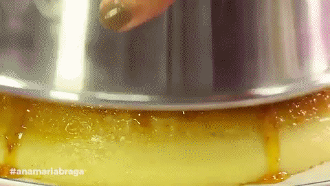

Como fazer um pudim de leite

Ingredientes
- Duas caixas de 395g de leite condesado
- 4 ovos inteiros
- Duas chicaras de 150ml açúca
- Uma culher de sopa de farinha de trigo
- Use a caixa do leite condesado para medir a quantidade do leite liquido
Modo de preparo
- Coloque os as duas caixas de leite condensado no copo de liquidificador e bata até ficar homogenia.
- Coloque 4 ovos inteiros e bata bem.
- Coloque uma colher de sopa de farinha de trigo.
- Use duas medida da caixa leite condesado para o leite liquido e acrecente na mistura.
Preparo da calda
- Coloque as duas chicaras de açúcar em uma panela mediana (nem muito funda, nem muito rasa) em fogo alto, e vá misturando até derreter totalmente o açúca.
- Em seguida dispege na assadeira untando totalmente ela, mas tome cuidado para que o açúca não endureça.
- Leve ao forno em banho maria em temperatura 210°C, até ele ficar douradinho.
- Depois de tudo feito é só desenformar e saborear.
